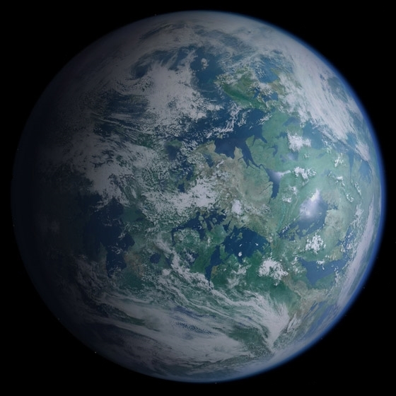
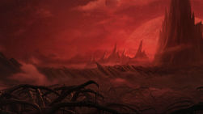
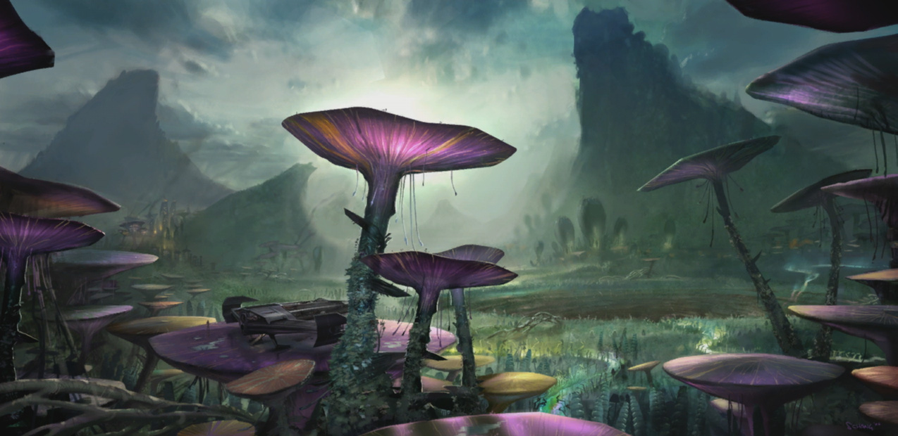
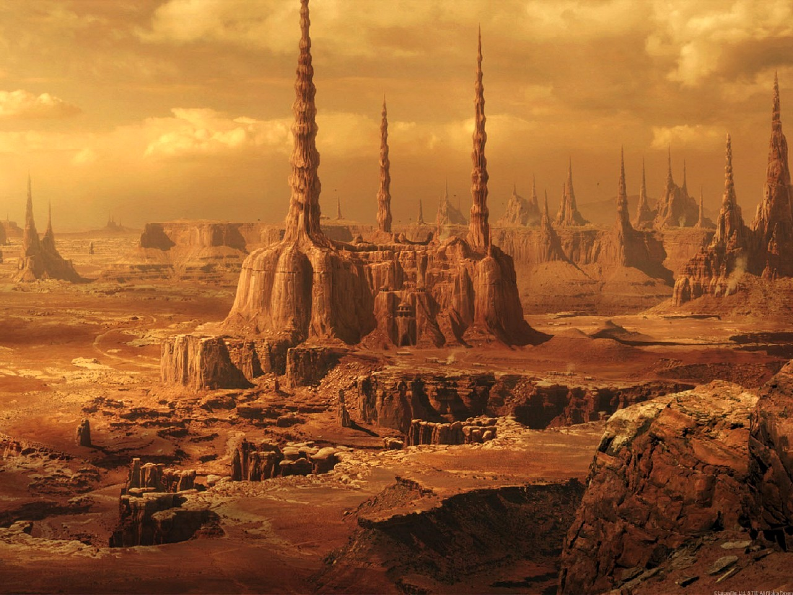
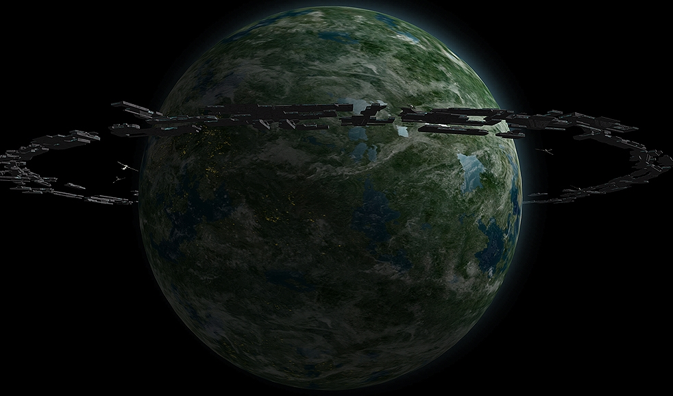
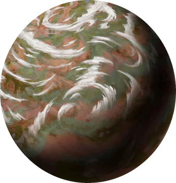
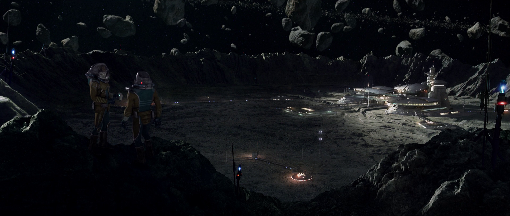
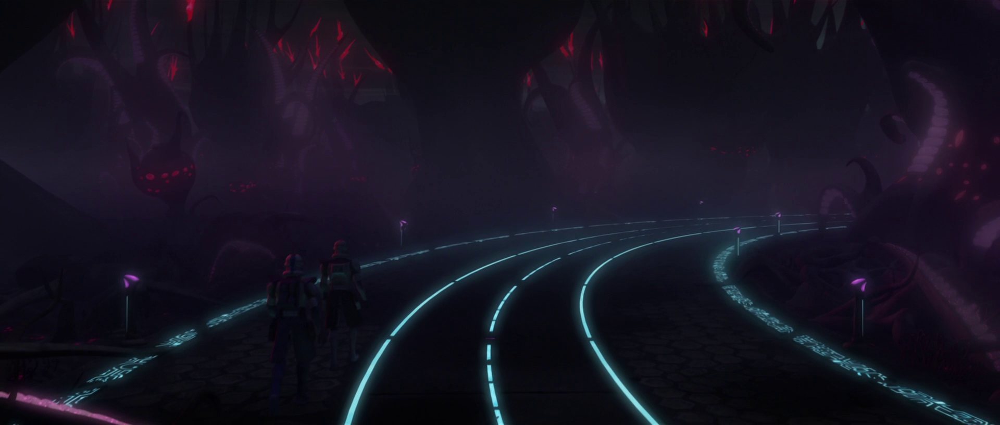

Explore
Planet Concordance:
Alderaan, Bespin, Christophsis, Corellia, Coruscant, Dagobah,
Dantooine, Dathomir, Endor, Eriadu, Felucia, Florrum, Geonosis,
Hoth, Iego, Ithor, Jakku, Kadavo, Kamino, Kashyyyk,
Kessel, Korriban, Kuat, Malastare, Mandalore, Mustafar, Mygeeto,
Naboo, Nal Hutta, Neimoidia, Polis Massa, Raydonia, Rishi, Rodia,
Ryloth, Scipio, Sullust, Tatooine, Teth, Trandosha, Umbara, Utapau, Yavin

Alderaan
LOCATION:
Core Worlds, Alderaan Sector
(Capital: Aldera)
SIGNIFICANCE:
Homeworld of Senator Bail Antilles, Bail Organa, & Leia Organa
Destroyed by the First Death Star
Bespin
LOCATION:
Outer Rim Territories, Anoat Sector
(Capital: Cloud City)
SIGNIFICANCE:
Led by Lando Calrissian
Gas planet - cities only exist in its atmosphere

Christophsis
LOCATION:
Not Available
(Capital: Chaleydonia)
SIGNIFICANCE:
Location of two battles during the Clone Wars
Corellia
LOCATION:
Core Worlds, Sector Not Available
SIGNIFICANCE:
Known for its pilots and starships
Homeworld of Han Solo and Wedge Antilles
Millennium Falcon and Imperial starships built here

Coruscant

LOCATION:
Core Worlds, Corusca Sector
(Capital: Galactic City)
SIGNIFICANCE:
Entire planet is one city; homeworld of the Human species
The most influencial planet in the galaxy & has been the seat of various governments
Dagobah

LOCATION:
Outer Rim Territories, Sector Not Available
SIGNIFICANCE:
Swamp planet uninhabited by intelligent species
Place of hiding for Jedi Master Yoda
Training location of Jedi Knight Luke Skywalker
Dantooine
LOCATION:
Outer Rim Territories, Sector Not Available
SIGNIFICANCE:
Location of brief battle during the Clone Wars
Briefly used as Rebellion base location
Dathomir
LOCATION:
Mid Rim, Quelli Sector
SIGNIFICANCE:
Home of the Nightsisters
Home of the Nightbrothers
Endor
LOCATION:
Outer Rim Territories, Moddell Sector
SIGNIFICANCE:
Home of the Ewok species
The moon contained a sheild generator for the Second Death Star,
which was destroyed by the Rebel Alliance
Eriadu
LOCATION:
Outer Rim Territories, Seswenn Sector
(Capital: Eriadu City)
SIGNIFICANCE:
Home of Grand Moff Tarkin
Felucia
LOCATION:
Outer Rim Territories, Sector Not Available
SIGNIFICANCE:
Important planet in the Perlemian Trade Route
Location of serveral battles during the Clone Wars
Jedi Master Aayla Secura was killed here during Order 66
Florrum
LOCATION:
Outer Rim Territories, Sertar Sector
SIGNIFICANCE:
Location of Hondo Ohnaka's gang of pirates
Geonosis
LOCATION:
Outer Rim Territories, Arkanis Sector
(Capital: Stalgasin Hive)
SIGNIFICANCE:
Location of massive Confederate droid facteries and
the first battle of the Clone Wars
Homeworld of insectoid Geonosian species
Hoth
LOCATION:
Outer Rim Territories, Anoat Sector
SIGNIFICANCE:
The Rebel Alliance's Echo Base (and the
subsequent Battle of Hoth) was located on this ice planet
Iego
LOCATION:
Not Available
SIGNIFICANCE:
The planet has 1,000 moons
One of its moons is populated by the Angel species
Ithor
LOCATION:
Mid Rim, Sector Not Available
SIGNIFICANCE:
Jungle homeworld of the Ithorian species
Jakku
LOCATION:
Western Reaches of the Inner Rim, Sector Not Available
SIGNIFICANCE:
Desert planet and home of Rey
Location of a battle between the Galactic Empire and
the New Republic following the Battle of Endor
Kadavo
LOCATION:
Not Available
SIGNIFICANCE:
Home of Zygerrian Slave Trade during the Clone Wars
Kamino
LOCATION:
Beyond the Rishi Maze, Abrion Sector
(Capital: Tipoca City)
SIGNIFICANCE:
An aquatic planet whose native Kaminoan species
are the best cloners in the galaxy
Home planet of the Republic Clone Army
Kashyyyk
LOCATION:
Mid Rim, Mytaranor Sector
SIGNIFICANCE:
Home planet of the Wookie species
Location of one of the last battles during the Clone Wars
Kessel
LOCATION:
Outer Rim Territories, Kessel Sector
SIGNIFICANCE:
Criminal spice mine planet run by the Pyke Syndicate
Korriban

LOCATION:
Outer Rim Territories, Esstran Sector, Horuset System
(Also Known As Pesegam or Moraband)
(Capital: Dreshdae)
SIGNIFICANCE:
Homeworld of the Sith Species and Sith Order

Kuat
LOCATION:
Core Worlds, Sector Not Available
SIGNIFICANCE:
Major producer of starships for both the Galactic Empire
and the Galactic Republic
Malastare
LOCATION:
Mid Rim, Dustig Sector
SIGNIFICANCE:
Known for massive fuel reserves
Homeworld of Senator Ainlee Teem
Homeworld of the Zilo Beast and a battle during the Clone Wars

Mandalore
LOCATION:
Outer Rim Territories, Mandalore Sector
SIGNIFICANCE:
Mandalore's moon, Concordia, is the home of the Death Watch,
which Jango Fett was a part of
Homeworld of Duchess Satine Kryze

Mustafar
LOCATION:
Outer Rim Territories, Atravis Sector
(Capital: Fralideja)
SIGNIFICANCE:
A volcanic Confederate planet where Anakin Skywalker
and Obi Wan Kenobi battled
Mygeeto

LOCATION:
Outer Rim Territories, Sector Not Available
SIGNIFICANCE:
A frigid crystalline planet and homeworld of the Lurmen species
Jedi Master Ki-Adi-Mundi was killed here during Order 66
Naboo

LOCATION:
Mid Rim, Chommell Sector
(Human Capital: Theed; Gungan Capital: Otoh Gunga)
SIGNIFICANCE:
Pacifist home planet of Emperor Palpatine and Padme Amidala
Home planet of the aquatic Gungan species & site of the Trade Federation Blockade
Nal Hutta
LOCATION:
Outer Rim Territories, Sector Not Available
SIGNIFICANCE:
Swampy homeworld of the Hutt species
Neimoidia
LOCATION:
Location Not Available
SIGNIFICANCE:
Homeworld of the Neimoidian species
Homeworld of Viceroy Nute Gunray and Senator Lott Dod
Polis Massa
LOCATION:
Outer Rim Territories, Subterrel Sector
SIGNIFICANCE:
Asteroid Field and birthplace of Luke and Leia Skywalker
Raydonia
LOCATION:
Outer Rim Territories, Sector Not Available
SIGNIFICANCE:
Location where Darth Maul and Savage Opress fought
Obi Wan Kenobi and Asajj Ventress during the Clone Wars
Rishi
LOCATION:
Outer Rim Territories, Abrion Sector
SIGNIFICANCE:
Rishi's moon contained a Republic outpost during the Clone Wars
Rodia

LOCATION:
Outer Rim Territories, Sector Not Available
SIGNIFICANCE:
Homeworld of the Rodian species
Represented by Senator Onaconda Farr
Ryloth
LOCATION:
Outer Rim Territories, Gaulus Sector
(Capital: Lessu)
SIGNIFICANCE:
Homeworld of the Twi'lek species
Its Twi'lek inhabitants were briefly captured by the Separatists
during the Clone Wars, but were freed by the Republic
Scipio
LOCATION:
Outer Rim Territories, Albarrio Sector
SIGNIFICANCE:
Ice planet and head of the InterGalactic Banking Clan
Represented by Senator Rush Clovis
Sullust

LOCATION:
Outer Rim Territories, Sullust Sector
SIGNIFICANCE:
Homeworld of the Sullustan species
Used by the Rebel Alliance as a staging area before the Battle of Endor
Tatooine
LOCATION:
Outer Rim Territories, Arkanis Sector
(Capital: Mos Espa)
SIGNIFICANCE:
Desert homeworld of Anakin and Luke Skywalker
Homeplanet of the Jawa and Tusken Raiders
Teth
LOCATION:
Wild Space, Baxel Sector
SIGNIFICANCE:
Location of the B'omarr Order Monastery
Planet is located deep in Hutt space
Trandosha
LOCATION:
Mid Rim, Mytaranor Sector
SIGNIFICANCE:
Jungle homeworld of the savage Transdoshan species
Umbara
LOCATION:
Expansion Region, Ghost Nebula
SIGNIFICANCE:
Known as the "Shadow World" and location of a battle during the Clone Wars
Utapau